SoundMind AI Ecosystem
This is the AI Sales Enablement Platform I designed and built as an AI Research Engineer at SoundMind Labs.
No commercial source code or customer information is included; the writeup focuses on architecture and the technical decisions behind it.
Overview
An AI Sales Enablement Platform that auto-generates, deploys, and demos a customer-document-driven RAG PoC.
Highlights
- New RAG-engine prototype deployment lead time — 2 weeks → 5 minutes (99%+ reduction)
- MSA scope — 9 Projects · 161 APIs · 15+ Docker · 103+ unit tests
- Up to 99 RAG pipelines running concurrently (per-customer isolated environments)
- RAG R&D — node-level Ablation Study over 81 Q&A · 11 public documents · 3,678 pages
- Quantified ablations — Reranking −12.8 pp (core contributor) · Query Decomposition +6.8 pp (performance-degrading)
- Document analysis — Dual-LLM (Gemini + GPT-4o) two-stage review pipeline → 26-feature profiling → 4-dimensional Decision Tree auto-recommendation
- VLM parsing A/B test — GPT-4o Judge weighted average 0.888 → 1.000 (+0.113); hallucinations and missing info eliminated
- PoC delivery — for a database-products company, 8 documents · 34 test cases · 3 Golden Path rehearsals
- Infra — 15+ Docker · Grafana + Loki + Promtail live monitoring · sized for 50 concurrent users
What the system does
- Customer documents go through a 3-stage pipeline (Gemini 2.0 Flash first-pass analysis → GPT-4o second-pass review) to auto-detect document characteristics
- The AI then recommends, generates, and deploys an optimal RAG pipeline from a 4-dimensional strategy space (5 Chunking · 5 Retrieval · 4 Indexing · 4 Post-Processing)
- Sales for a customer can compose a PoC demo immediately; the customer experiences it directly in the Playground
- End-to-end automation: analyze → deploy → evaluate → monitor
- For new customer documents, new-engine prototype deployment lead time drops from 2 weeks to 5 minutes (99%+ reduction)
Scale
- 9 projects · 161 APIs · 103+ unit tests
- Up to 99 RAG pipelines concurrent (ports 9201 – 9299)
- 7 parser classes · 10 file extensions (PDF, DOCX, XLSX, XLS, TXT, MD, RST, JSON, HWP, HWPX)
- LLMs: cloud APIs (OpenAI, Gemini) + local model serving on vLLM
System Architecture
※ Captured at the time I left SoundMind in March 2026; nothing after this is my contribution.
This was a solo-developed project — planning, design, system development, and deployment all run as a solopreneur. At my exit, the system was in beta with end-user testing underway.
The SoundMind AI Ecosystem is built around three pillars: customer-facing service (AI Platform), internal operations (AI Console — Analysis · Eval · Monitoring), and the model-serving infrastructure they share.
Model serving:
• LLM — Qwen3 series, served via vLLM (OpenAI-compatible API)
• Embedder / Reranker — BGE-M3 + BGE-Reranker-v2-M3, served via Infinity. vLLM had architecture-compatibility issues loading BGE-M3 (recognized as XLMRobertaModel, sparse/colbert weights missing), so we switched to Infinity, which is purpose-built for embedding-model serving.
This article's structure:
① RAG R&D — built Advanced RAG → quantitative evaluation → Ablation Study → arrived at "different documents need different strategies"
② AI Console — internal operations platform built on those insights (Analysis · Eval · Monitoring)
③ AI Platform — customer Playground for instant PoC (RAG Agent · Chat Agent · AICC Agent)
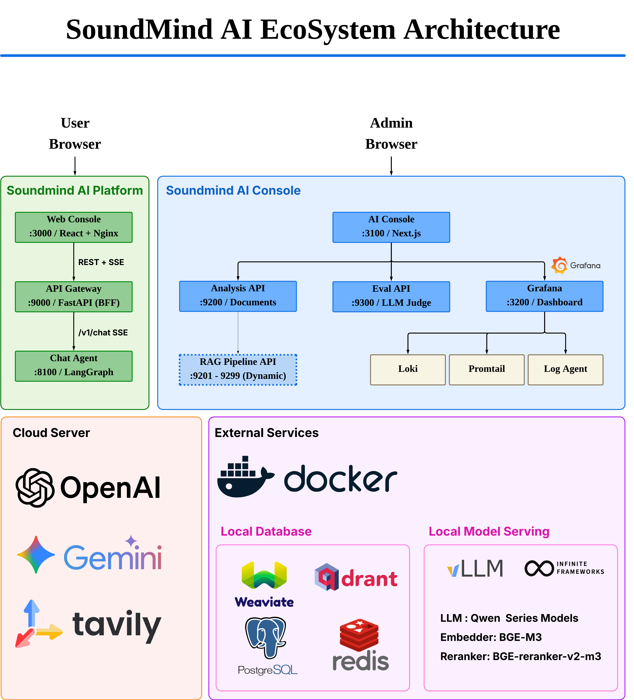
RAG R&D — A Generalist RAG Built for the Public Sector
The journey of building Advanced RAG, running quantitative evaluation and Ablation Study, and arriving at "different documents need different strategies". That insight is what powered the 4-dimensional Decision Tree auto-recommendation system in the Analysis Platform.
Stage 1 — Designing and building Advanced RAG
The company had no RAG pipeline. Entering NLP via a B2B2G (corporate → public-sector) model, I decided to design Advanced RAG from the start, not Naive RAG.
Model selection — LLM · Embedder · Reranker:
The platform was cloud-served but GPUs were on-premise, so local model serving was a must. We needed a large model with reasoning ability and chose the Qwen3 series — one of the strongest on global benchmarks — and served it on vLLM.
I tried to keep Embedder and Reranker on Qwen too, but vLLM's architecture-compatibility issues blocked deployment. Among general-purpose open-source models, BGE-M3 (Embedder) + BGE-Reranker-v2-M3 (Reranker) had the highest Korean evaluation scores; we served them via Infinity, which is purpose-built for embedding serving.
From there I picked three core components.
Query Expansion (Rewrite + Decomposition):
In B2B2G we can't pin down the end user's domain, but we know the customer is a government body. Public documents demand precision, so we rewrite a question several ways (Rewrite) to capture relevant context fully, and split compound queries into sub-queries (Decomposition) to gather information from multiple angles.
Hybrid Search (Dense + Sparse + RRF):
Government documents lean heavily on Sino-Korean compounds and agency-specific terms, so keyword matching matters — Sparse Search (BM25) was the obvious complement. RRF combines Dense and Sparse; lacking deep familiarity with the algorithm at the time, we adopted Weaviate, which natively supports Hybrid Search. Later we found that for flat-structured documents, metadata-filter-based retrieval performs better, so we added Qdrant (filter-based) and split the vector DB by document complexity.
Reranking (Top-k=5):
BGE-Reranker-v2-M3 was the top-scoring open Korean reranker with an open license — perfect for on-premise deployment.
Data Parsing expansion:
We started with Docling but parsing latency was too high to be practical, then moved to pdfplumber + PaddleOCR for throughput. Government workflows require many HWP / HWPX files plus DOCX, XLSX, and others, so we wrapped per-extension OSS parsers into UnifiedFileParser (7 parser classes · 10 extensions).
• PDFParser (.pdf) — 3-stage fallback chain: pymupdf4llm (1st, layout-aware Markdown) → pdfplumber (2nd) → PaddleOCR (3rd, Korean scanned-document OCR). Auto-switches to OCR if a page has fewer than 50 characters of text
• DOCXParser (.docx) — python-docx for paragraphs + tables, plus document properties
• XLSXParser (.xlsx, .xls) — openpyxl (read_only=True, data_only=True), iterates all sheets and structures per sheet
• TXTParser (.txt, .md, .rst) — built-in, encoding auto-detected (UTF-8 → CP949 → EUC-KR → Latin-1)
• JSONParser (.json) — built-in json, hierarchical → human-readable text
• HWPParser (.hwp) — olefile-based OLE compound parsing; HWPTAG_PARA_TEXT (tag=67) records from BodyText sections + zlib decompression
• HWPXParser (.hwpx) — zipfile + BeautifulSoup, OOXML parsing, text from Contents/section*.xml
Embedding-serving framework benchmark — vLLM vs Infinity
After choosing Infinity due to vLLM's architecture issues, we ran a quantitative comparison: 10 PDFs (5 arXiv + 5 Korean public documents), 20 repetitions each. We did not stop at "switched due to compatibility" — we identified workload-specific optimal frameworks across domains and languages to back the infrastructure decision.
Online serving — single-request latency & concurrent throughput (mean ± std):
| Text length | vLLM Latency | Infinity Latency | vLLM req/s (c=16) | Infinity req/s (c=16) |
|---|---|---|---|---|
| Short (~100 chars) | 13.0 ± 0.4 ms | 19.9 ± 0.3 ms | 260 ± 29 | 155 ± 5 |
| Medium (~500 chars) | 15.0 ± 1.6 ms | 20.8 ± 0.5 ms | 213 ± 9 | 150 ± 7 |
| Long (~1000 chars) | 18.4 ± 3.6 ms | 20.9 ± 0.7 ms | 202 ± 10 | 149 ± 6 |
→ vLLM gives 12 – 34% lower latency and 1.4 – 1.7× more req/s. But Infinity's std is much smaller (0.3 – 0.7 ms vs 0.4 – 3.6 ms), guaranteeing consistent response time regardless of document type — the small gap between P99 and mean makes SLA prediction easier and is friendlier to stable production RAG operation.
Batch processing — batch throughput (batch=32, K tokens/s, mean ± std):
| Text length | vLLM (K tokens/s) | Infinity (K tokens/s) | Ratio |
|---|---|---|---|
| Short (~100 chars) | 28 ± 4 | 39 ± 2 | Infinity 1.4× |
| Medium (~500 chars) | 98 ± 25 | 167 ± 18 | Infinity 1.7× |
| Long (~1000 chars) | 154 ± 28 | 255 ± 48 | Infinity 1.7× |
→ Infinity gives 1.4 – 1.7× more tokens/s — fixed batches go through a single forward pass, maximizing GPU utilization. Long-text peak: 323K tokens/s.
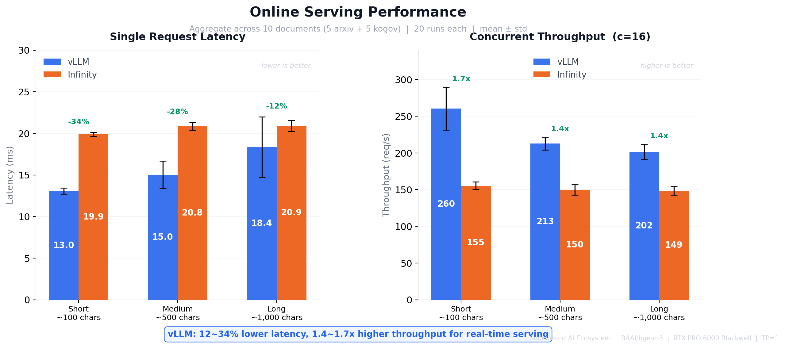
1. Online serving — vLLM 12 – 34% lower latency, 1.4 – 1.7× more req/s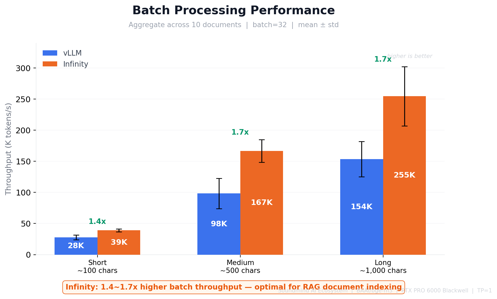
2. Batch — Infinity 1.4 – 1.7× more tokens/s (best for RAG document indexing)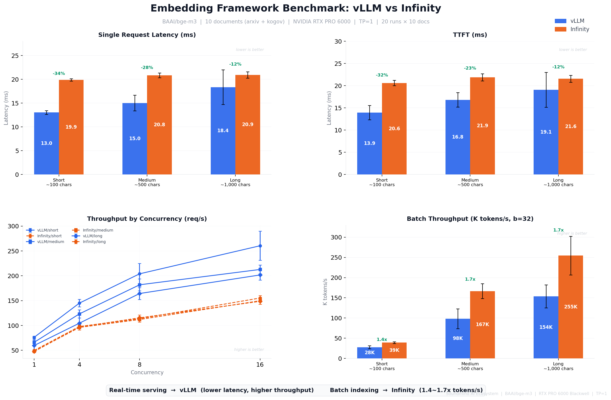
3. Combined — real-time serving → vLLM, batch indexing → Infinity (10 docs × 20 runs)Operational conclusion:
| Workload | Profile | Best framework |
|---|---|---|
| Document upload → bulk embedding indexing | hundreds-thousands of chunks, latency-tolerant | Infinity ✓ |
| User query → real-time retrieval | single request, latency-sensitive | vLLM |
Trade-off decision:
vLLM wins on per-request latency, but our business model had to onboard many government tenants in parallel. Each new customer dropped hundreds-to-thousands of pages, and chunk-level bulk embedding/indexing was the dominant workload. Bulk-indexing throughput, not single-query response speed (millisecond differences), was the bottleneck for service scaling — so we picked Infinity, which leads batch throughput by 1.4 – 1.7×. As a bonus, Infinity's low variance gave us a more stable production posture. The crossover pattern reproduced consistently across 10 documents (English arXiv + Korean public documents) × 20 runs, confirming the trade-off holds across domains and languages.
Stage 2 — What quantitative evaluation revealed
After building Advanced RAG, we needed to measure it. I built a RAGAS-based evaluation framework from scratch.
LLM-driven Silver Dataset auto-generation:
I borrowed data engineering's Medallion Architecture (Bronze → Silver → Gold) for evaluation-data generation. From 3,678 pages of raw public documents (Bronze), Qwen3-VL-30B auto-generated 81 Q&A Ground Truth tagged with difficulty, query type, and reasoning hops (Silver). That Silver set powered our node-level Ablation Study, quantifying per-component contribution (Gold). Those numbers fed directly into the Decision Tree thresholds in the AI Console auto-recommendation engine.
RAGAS limits:
The RAGAS metrics ROUGE-L (0.050) / BLEU (0.002) etc. score token-level overlap (CER, WER) between Ground Truth and the RAG response.
Generative AI yields different vocabulary and phrasing every time, so semantically correct responses can score low if tokens diverge. Korean's agglutinative nature (variable particles and endings) made this worse.
That pushed me to switch to LLM-as-a-Judge with a 5-dimensional weighted evaluation, judging at the meaning level, not the token level.
Node-level core experiments:
| Experiment | Comparison | Result | Notes |
|---|---|---|---|
| Chunking | Recursive vs Semantic | 600× faster | → Recursive adopted (14 ms vs 8,437 ms; similar coverage, dominant speed) |
| Retrieval | Dense vs Hybrid | MRR +2.3 pp | → branch by document (Dense leads on Korean overall, but keyword-driven docs benefit from Hybrid) |
| Reranking | On vs Off | MRR +3.9 pp | → always on (despite 2.8× latency, precision gain matters more) |
Structural limit revealed by many evaluations:
Most queries were Flat, not Multi-Hop, but the dominant pattern was that you had to gather dozens of contexts at once to answer. For example, "explain the project criteria across all 20 subdivisions" needs 20+ contexts — Top-k=5 in the Reranker is far from enough. Looking at these documents, sections share repetitive structure (conclusions, requirements).
That's where Qdrant came in. For repetitive-structure documents, JSON metadata-based filter retrieval beats semantic search — store section-level metadata at upload, and you can precisely filter the 20+ contexts you need. Splitting the vector DB into Weaviate (Hybrid Search) and Qdrant (Filter-based) by document characteristic comes from this.
End-to-end result — Advanced RAG actually scored lower:
81 Q&A in full, 5-dimensional weighted average:
| Metric | Weight | Naive RAG | Advanced RAG | Δ |
|---|---|---|---|---|
| Faithfulness | 30% | 0.813 | 0.738 | −7.5 pp |
| Relevance | 25% | 0.825 | 0.763 | −6.2 pp |
| Completeness | 20% | 0.813 | 0.688 | −12.5 pp |
| Coherence | 15% | 0.925 | 0.938 | +1.3 pp |
| Fluency | 10% | 0.963 | 0.950 | −1.3 pp |
| Weighted average | 100% | 0.848 | 0.785 | −6.3 pp |
Completeness collapsed by −12.5 pp — fatal for public-document Q&A, where information must be exhaustive.
The assumption that "more components → better" was wrong.
That experience produced the core insight: "each document needs a tailored RAG structure" — and the goal of building a platform that auto-generates the optimal pipeline per document.
Stage 3 — Why Doesn't It Work? Ablation Study
E2E metrics tell you "something is off" but not where. Advanced RAG scored lower than Naive, but E2E alone could not isolate the culprit among the four added components. So I designed and ran a node-level Ablation Study.
Key findings:
• Removing Reranking → −12.8 pp — the highest-impact component
• Removing Query Decomposition → +6.8 pp, latency −32% (129 s → 88 s) — it was actively hurting us
• Removing Query Rewrite → −0.8 pp — minimal contribution
• Hybrid → Dense → −5.0 pp — moderate contribution
| Removed component | Δ performance | Latency | Verdict |
|---|---|---|---|
| Reranking | −12.8 pp | — | → always on (drop is severe; core contributor) |
| Query Decomposition | +6.8 pp | −32% (129 s → 88 s) | → conditional (better off without it across the board) |
| Query Rewrite | −0.8 pp | — | → keep (small effect, slight regression on removal) |
| Hybrid → Dense | −5.0 pp | — | → branch per document (Dense-leading and Hybrid-leading docs coexist) |
Why Query Decomposition hurt:
Splitting into sub-queries diluted the original intent, and the contexts each sub-query pulled added noise — answer quality fell. About 80% of GT was Easy/Medium, so most cases didn't need complex reasoning and a single query was enough.
Why Hybrid Search trailed Dense in Korean public documents:
BM25 keyword matching is weak in Korean — particles and endings shift surface forms, and Sino-Korean compounds and abbreviations don't tokenize cleanly, so Sparse retrieval injects noise (higher Sparse weight → lower MRR: α=0.7 → 0.838, α=0.3 → 0.811). For domains like law and regulation where exact-term matching matters, Hybrid still wins — hence per-document branching.
Core insight:
E2E alone tells you "Advanced is worse"; it doesn't tell you "Query Decomposition is the culprit." Reranking's +12.8 pp contribution was being canceled by Query Decomposition's −6.8 pp loss, and only node-level Ablation could pull them apart.
Stage 4 — From insight to ecosystem
"Different documents need different strategies" was the R&D conclusion.
• Reranking always on → reranker stays on across every pipeline
• Query Decomposition only when multi-hop is expected → conditional (multi_hop_likelihood > 0.4)
• BM25 underperforms in Korean → branch Dense / Hybrid by semantic_importance
• Optimal chunking depends on structure → branch chunking by structural complexity
Additional insight — data structuring drives final answer quality:
Throughout the Ablation Study, another insight surfaced. The quality of data structuring affects semantic chunking, which affects retrieval, and ultimately decides final answer quality. Korean public documents in particular have complex tables, charts, and layouts that text-only parsers lose — quality erodes at every downstream stage.
That insight led to a separate research project on VLM-based document parsing: WigtnOCR (Qwen3-VL-2B LoRA fine-tuning → #1 Table TEDS among the four compared models, surpassing the 15× larger 30B Teacher).
Why "platform" — the business case:
We were a voice-AI company entering NLP for the first time. Without a PoC to show, sales had to make introductions through their network — but asking every prospect for "two weeks and your data" was unrealistic.
We needed an environment where, the moment an opportunity opens, sales could log into the cloud, upload customer documents, and demo immediately.
Combined with the R&D insights, that need produced the decision: ship document analysis → custom pipeline auto-generation → one-click deployment as a console operable by non-engineers.
To this we added evaluation for shipped pipelines, monitoring and log analysis for live operations, and Admin for users and permissions — all in a single console. That is the SoundMind AI Ecosystem architecture.
AI Console — Internal Operations Platform
The integrated Admin console operable by non-engineers born from RAG R&D and business need. A single Next.js web console (:3100) covers document analysis & deployment (Analysis), quality evaluation (Eval), live monitoring (Monitoring), and infra/user management (Admin) — the entire RAG sales cycle.
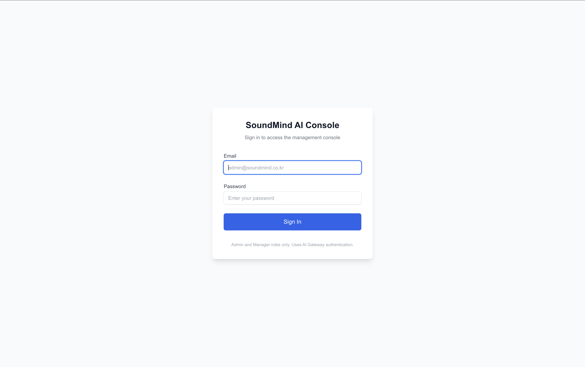
1. Login — admin authentication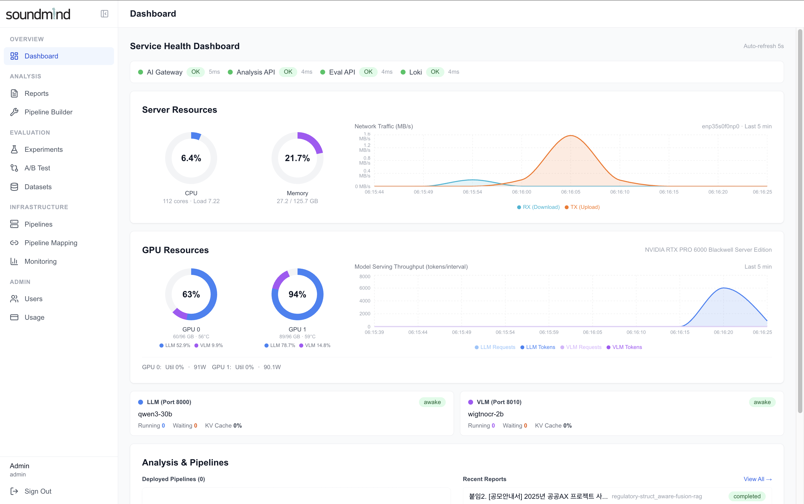
2. Dashboard — service health, GPU allocation, model serving, pipeline managementAI Console — Analysis (document analysis → RAG auto-deploy)
Upload customer documents and the AI profiles them across many dimensions, recommends an optimal RAG Pipeline, and one-click deploys a Docker container. New-engine prototype deploy lead time 2 weeks → 5 minutes (99%+ reduction).
2-tier architecture: Analysis API (port 9200, control plane) + deployed pipelines (ports 9201 – 9299, data plane).
Why a Dual-LLM 2-stage review
Profiling 26 features with a single LLM bakes that model's training bias straight into the result.
Judgments like document-structure complexity or domain-specialization differ across models, so trusting just one can produce over- or under-engineered designs for certain document types.
• Gemini 2.0 Flash — analyzes the PDF natively via the PDF File API; first-pass profiling + strategy recommendation. Flash makes mass analysis cost-efficient.
• GPT-4o — second-pass review. Compares Gemini's profile against text extracted by an OSS parser (pdfplumber) and validates profile accuracy and strategy fitness with Structured Outputs (json_schema strict mode); adjusts confidence. Disagreements defer to GPT-4o.
This is not two models cross-validating the same input — it's a sequential 2-stage pipeline where Gemini analyzes and GPT-4o reviews. GPT-4o has a comparative advantage as the reviewer because it can also see OSS-parser-extracted text Gemini can't access.
Document analysis criteria — 26-feature profiling
The 26 features extend the Korean-optimized RAG strategy design from urstory-rag (a production Korean RAG OSS), adapted for public-sector documents into 4 profiles · 26 features.
- Structure profile — hierarchy depth (1 – 4+), section independence (0.0 – 1.0), cross-reference density, dominant structure type (narrative / table-centric / hierarchical / mixed / QA), repetition
- Content profile — info density (sparse / moderate / dense), density distribution, entity-relation structure, domain-specialization (0.0 – 1.0)
- Retrieval profile — expected query types (factual / comparative / aggregation / causal / procedural), keyword vs semantic importance, context-window need, multi-hop likelihood
- Visual profile — table complexity (none → nested), chart presence, image info density, layout complexity
Stage 1 — Gemini 2.0 Flash + text extraction (parallel)
Gemini analyzes the PDF natively via the PDF File API and directly recommends 26-feature profile + RAG strategy (Structured Output, temp=0.1). In parallel, pdfplumber extracts text for GPT verification. asyncio.gather runs them concurrently, halving analysis time. Above 300 pages / 50 MB, sample representative pages (front 60% · middle 20% · end 20%).
Stage 2 — GPT-4o second-pass review
GPT-4o validates Gemini's profile accuracy (structure depth, domain-specialization) and strategy fitness (over/under-engineering) using json_schema strict mode. Confidence adjustment ranges −0.3 to +0.2; outputs classify as confirmed / modified / rejected. If GPT is unset, Gemini-only results take a ×0.8 penalty for stability.
Stage 3 — Strategy Engine + dynamic pipeline assembly
ReportGenerator merges Gemini's source with GPT's modifications, then chooses the best combination from the 4-dimensional strategy space (5 Chunking · 5 Retrieval · 4 Indexing · 4 Post-Processing — over 6,400 theoretical combinations).
Branching logic combining Ablation Study results with domain heuristics:
• Reranking → always on across every post-processing strategy (Ablation: −12.8 pp when removed)
• Query Decomposition → enabled only when multi_hop_likelihood > 0.4 (Ablation: +6.8 pp regression when applied unconditionally. The 0.4 threshold is a domain heuristic — "minimum point at which a query is unanswerable from a single context." Three thresholds, 0.4 / 0.5 / 0.6, route mid-complexity to Multi-Query and high-complexity to Graph-Enhanced)
• Retrieval → Dense if semantic_importance > 0.7; Hybrid if keyword_importance > 0.6 (Ablation: BM25 weakness in Korean confirmed; thresholds set by domain rules)
• Vector DB → Qdrant for metadata_filtered; Weaviate otherwise — auto-decided
DynamicRAGPipeline assembles ComponentRegistry + LangGraph StateGraph at runtime. Six graph topologies: Linear, Classify-Filter, Hierarchical, Multi-Index, Graph-Enhanced, Agentic.
One-click deploy
- Auto-generated Docker Compose from Jinja2 templates → one-click deploy
- asyncio.Lock concurrency protection + auto port allocation (9201 – 9299)
- Each pipeline auto-deployed to an isolated container and registered with the service
- Pipeline Factory: name auto-generated from strategy combination (e.g., regulatory-struct_aware-filtered-rag)
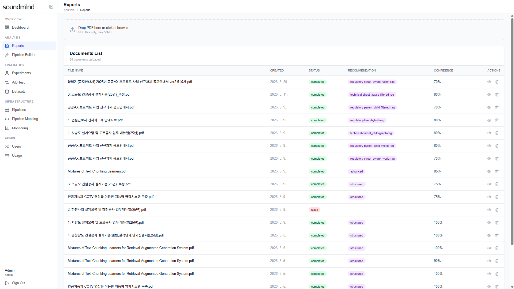
1. Reports — document upload and analysis-result list (pipeline recommendation · confidence)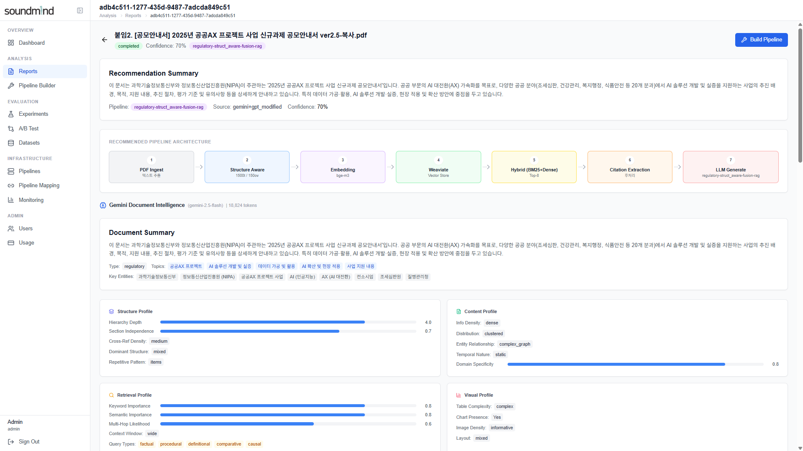
2. Recommendation — recommended pipeline architecture + 4 profiles · 26-feature visualization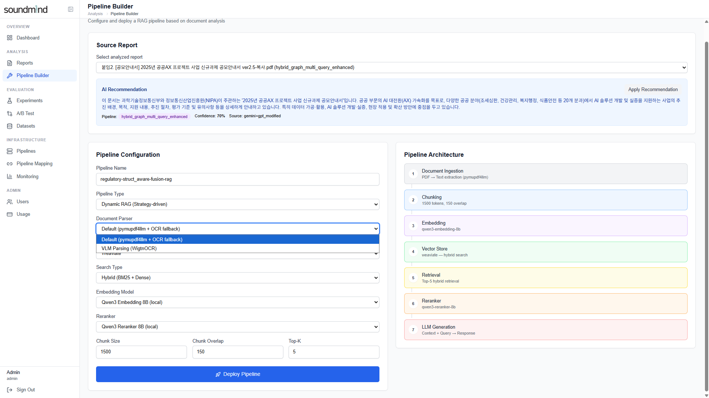
3. Pipeline Builder — AI-recommended config tweaks + VLM Parsing (WigtnOCR) + one-click deploy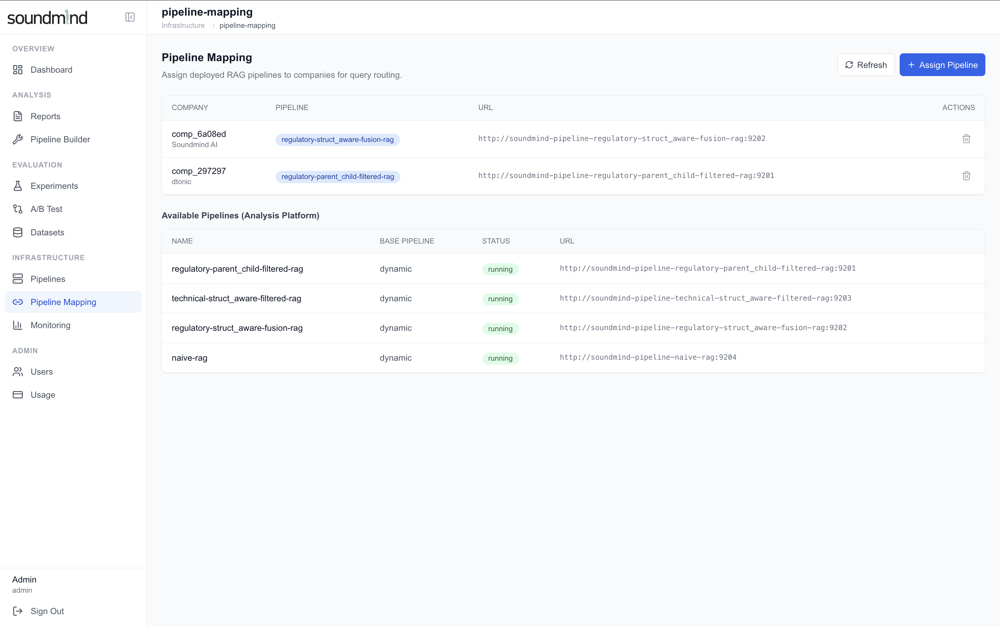
4. Deployed — Docker container created, service registeredAI Console — Eval (RAG quality)
Quantitative evaluation of deployed pipelines and statistical verification of strategy changes.
Why LLM-as-a-Judge
The 5-dimensional weighted evaluation + Silver-Dataset GT generation we built in RAG R&D Stage 2 was productized into AI Console Eval.
The evaluation pipeline validated in R&D was made directly usable by non-engineers to grade deployed pipelines.
The other key principle is separating Judge model from response model.
If the same model both generates and judges, we observed self-bias — long answers that contained hallucinations got high scores.
| Setup | Generator (RAG LLM) | Judge | Result |
|---|---|---|---|
| Before (self) | Qwen3-30B (vLLM) | Qwen3-30B (vLLM) | naive-rag full marks — hallucination missed |
| After (separated) | Qwen3-30B (vLLM) | GPT-4o (OpenAI API) | fusion-rag wins — hallucination accurately detected |
LLM-as-a-Judge: 5-dimensional weighted evaluation
G-Eval-style detailed rubric and Chain-of-Thought reasoning. Each dimension is graded 1 – 5 (Likert) and normalized to 0 – 1.
| Dimension | Weight | What it scores |
|---|---|---|
| Faithfulness | 30% | Faithful to retrieved context (no hallucination) |
| Relevance | 25% | Appropriately answers the question |
| Completeness | 20% | Includes all required info |
| Coherence | 15% | Logically consistent |
| Fluency | 10% | Natural, readable |
A/B test result — VLM parsing vs default parsing
Same document (2025 Public AX Project Bidding Guide, 69 pages) uploaded to both pipelines; same questions evaluated by GPT-4o Judge.
| Pipeline | Parser | Retrieval | Reranker |
|---|---|---|---|
| Pipeline A: naive-rag | pymupdf4llm (default) | Dense only, top_k=5 | None |
| Pipeline B: fusion-rag | WigtnOCR VLM (4× parallel) | Hybrid + Filtered, top_k=10 | Qwen3 Reranker 8B |
GPT-4o Judge results:
| Dimension | naive-rag (A) | fusion-rag (B) | Δ | Winner |
|---|---|---|---|---|
| Relevance (25%) | 1.00 | 1.00 | 0 | tie |
| Faithfulness (30%) | 0.75 | 1.00 | +0.25 | B |
| Coherence (15%) | 1.00 | 1.00 | 0 | tie |
| Fluency (10%) | 1.00 | 1.00 | 0 | tie |
| Completeness (20%) | 0.75 | 1.00 | +0.25 | B |
| Weighted overall | 0.888 | 1.000 | +0.113 | B |
Why GPT-4o Judge deducted points:
• Faithfulness −0.25 — answer mixed in external knowledge not present in the context ("70% private contribution," "in-kind only as labor cost") — hallucination
• Completeness −0.25 — missed the difference of "research-institute participation allowed" in the ⑫ Quarantine Management, ⑭ Patent Information, ⑮ Legal Information subdivisions; incorrectly stated all subdivisions are identical
→ Quantitatively confirms that VLM parsing (WigtnOCR) provides more accurate context, allowing the LLM to generate complete answers without hallucination.
A/B test statistical verification
| Method | Use |
|---|---|
| Mann-Whitney U test | Non-parametric (no normality assumption) |
| Bootstrap CI (1,000 resamples) | 95% confidence interval |
| Cohen's d | Effect-size interpretation (small/medium/large) |
| Holm-Bonferroni correction | Type I error control under multiple comparisons |
| Redis caching | Cache baseline results — half the cost/time of A/B tests |
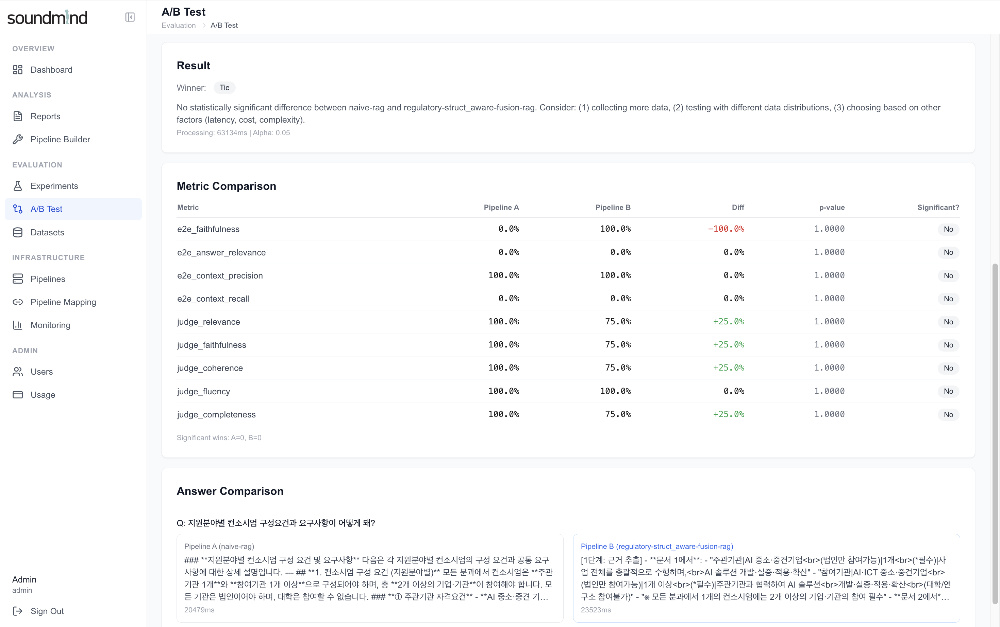
1. Before — Qwen3-30B self-judge: RAGAS E2E + Judge full marks (hallucination missed)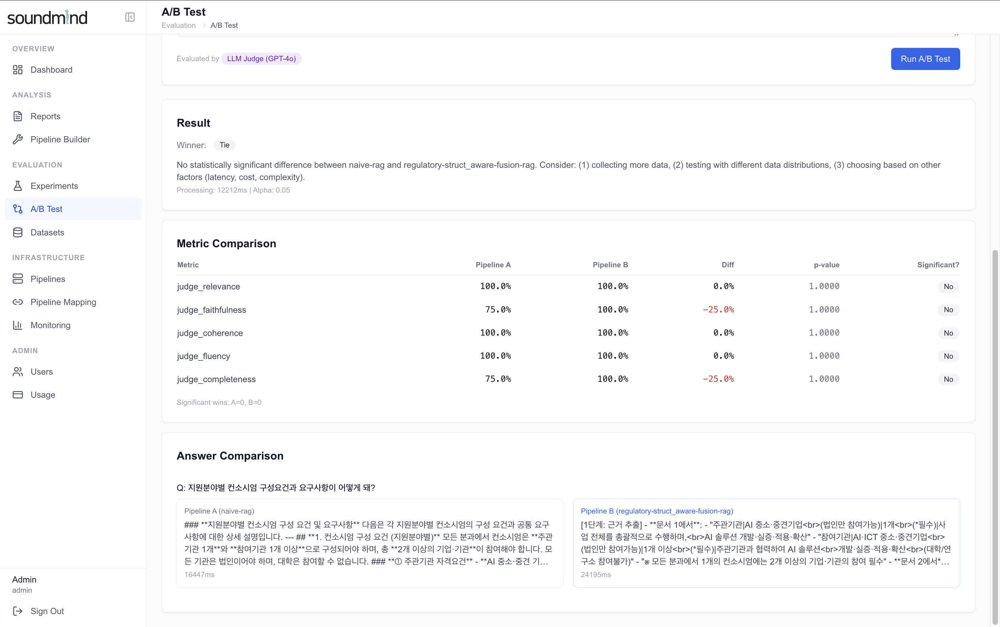
2. After — GPT-4o separated judge: fusion-rag wins on Faithfulness · Completeness (hallucination correctly detected)AI Console — Monitoring (live monitoring)
Centralized log collection and visualization across the ecosystem to detect outages early and see service state in real time.
Why Grafana + Loki
With LLM serving and RAG pipelines sharing GPU servers (RTX PRO 6000 ×2), ELK's resource footprint was a burden.
Grafana + Loki + Promtail offers non-intrusive Docker-socket-based auto-collection — no app-code changes — and uses far fewer resources than ELK.
Infrastructure
- Grafana 11.5.2 + Loki 3.4.2 + Promtail 3.4.2 for centralized log collection
- Docker-socket-based auto-collection — no config changes for new containers
- Labels (low cardinality: level, platform, service) separated from Structured Metadata (high cardinality: logger, module, function) for efficient Loki indexing
Dashboards
- 4 dedicated dashboards: System Overview · AI Platform · Analysis · Eval
- Separate dashboard for model-serving logs
- Covers service health, GPU allocation, pipeline management, user/permission settings
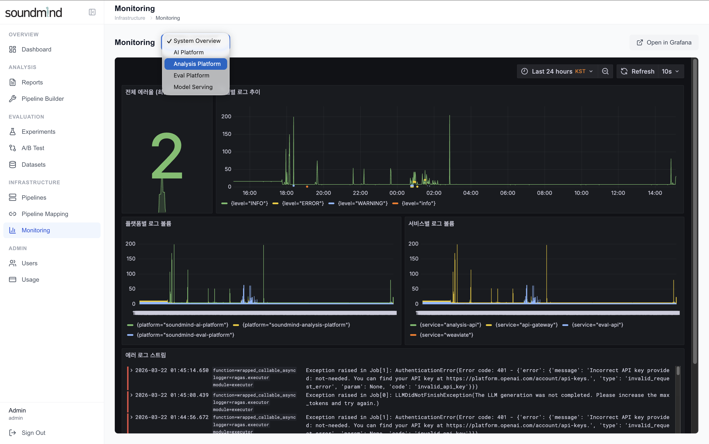
1. System Overview — ecosystem-wide live log dashboard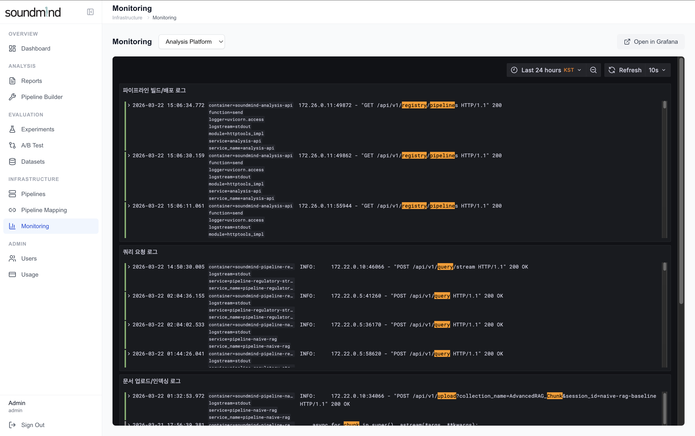
2. Platform Detail — per-platform metrics and error tracingAI Platform — Customer-Facing Playground (B2B SaaS)
The Playground service platform where customers can experience the custom RAG Pipelines created and deployed in AI Console — instantly, in the field. Sales can hit the cloud, upload customer documents, and demo on the spot. Three independent Agent sessions provided. Built on a React 19 web console + FastAPI API Gateway (JWT multi-tenant auth, SSE streaming).
Web Console
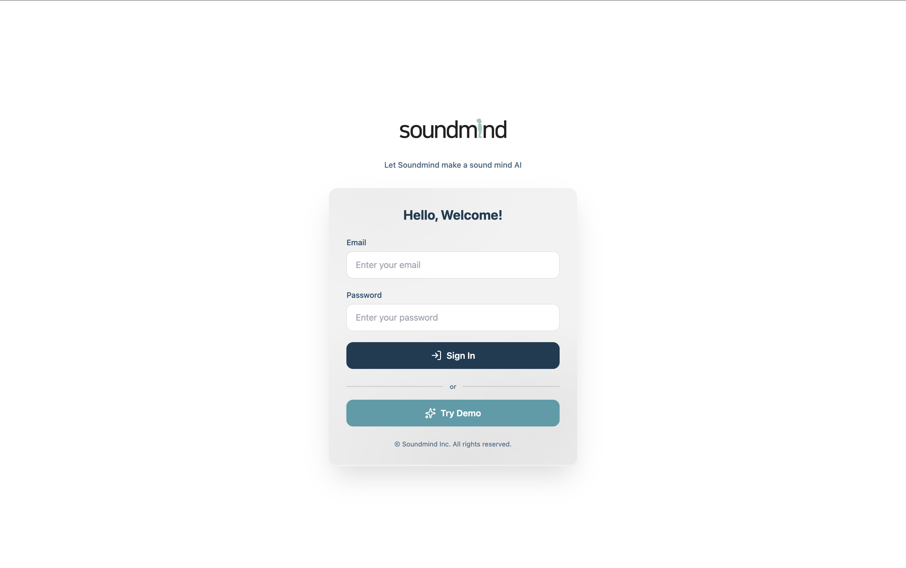
1. Login — JWT multi-tenant authentication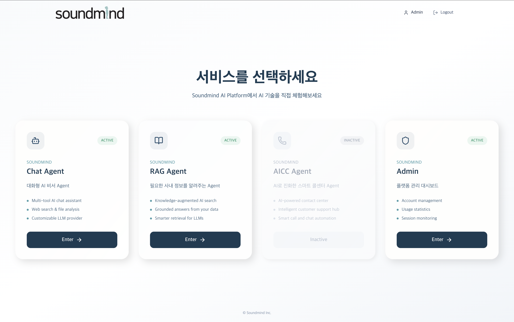
2. Portal — pick RAG Agent · Chat Agent · AICC AgentAuth · Permissions — 5-step evolution
Started no-auth at MVP and gradually expanded to PoC delivery. 3-tier multi-tenancy (Company-slug + Team + Session) isolates data per customer.
| Step | Auth | Key change |
|---|---|---|
| ① | No-auth | MVP fast validation |
| ② | JWT | DB-backed user auth |
| ③ | Guest tier | Try without sign-up (refresh token disabled) |
| ④ | 3-tier RBAC | Admin · Manager · User · Guest role-based access |
| ⑤ | Guest BYOK | Guests call cloud LLMs with their own API key |
① RAG Agent — Document-grounded Q&A
A document-specialized Q&A agent that answers from the customer's uploaded documents. The custom pipeline auto-generated and deployed by AI Console Analysis is auto-detected and connected by AI Platform. Each customer is wired to a different optimized pipeline, so the same platform delivers a customer-tuned retrieval-and-response experience.
- Dynamic Pipeline Routing — looks up the pipeline URL in a per-Company PipelineMapping table, routes dynamically. Up to 99 pipelines (9201 – 9299) concurrent, httpx.AsyncClient lazy init + connection pooling
- Graceful Degradation — if the pipeline fails, automatically falls back to direct LLM (with fallback: true metadata); user requests don't drop
- Retrieval Insight 3-panel — (1) Query Transformation: original → 5 optimized queries, (2) Hybrid Search Score: Dense/Sparse bar chart, (3) Reranking Impact: ranking shifts visualized (#1 Gold · #2 Silver · #3 Bronze badges). Streamed live over SSE
- SSE live streaming — agent_start → processing → llm_stream (token-level) → final_response → done. StreamingThinkParser separates <think> tags in real time so reasoning and answer render concurrently
RAG Agent
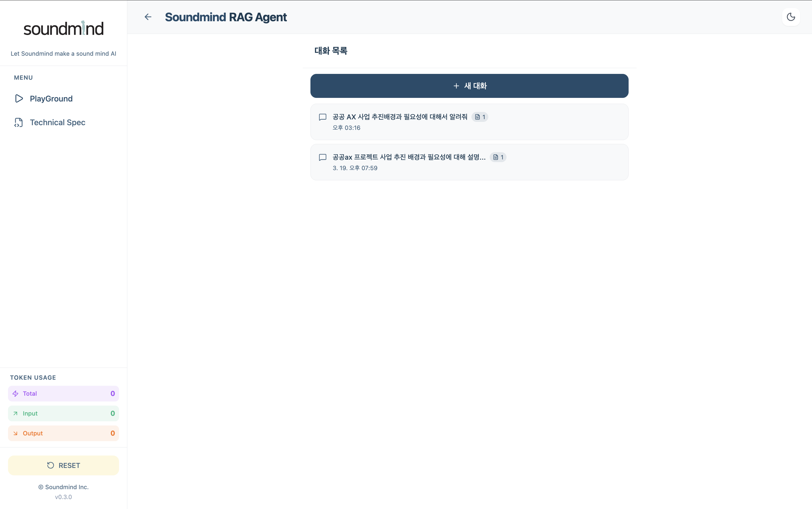
1. RAG Agent main — document-grounded Q&A Playground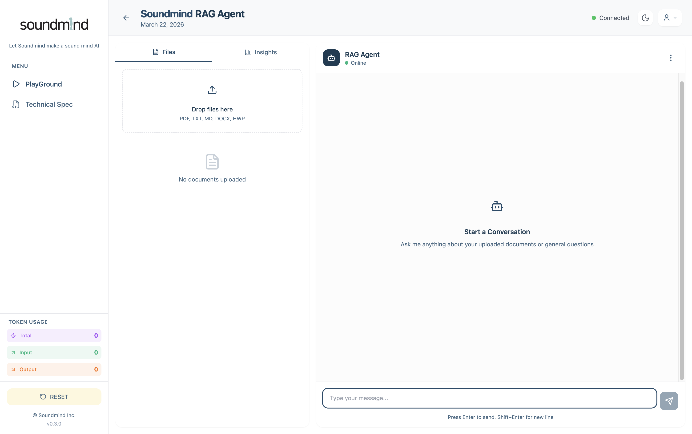
2. Chat session — document-grounded Q&A and SSE live streaming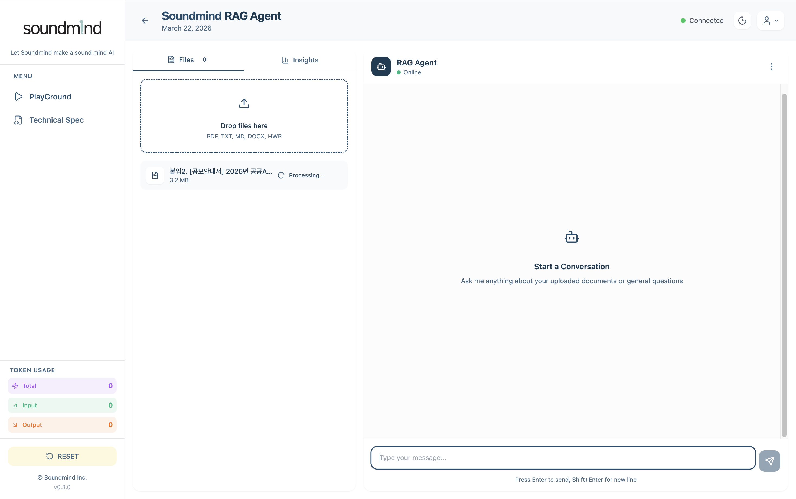
3. Document upload — customer-document upload and pipeline binding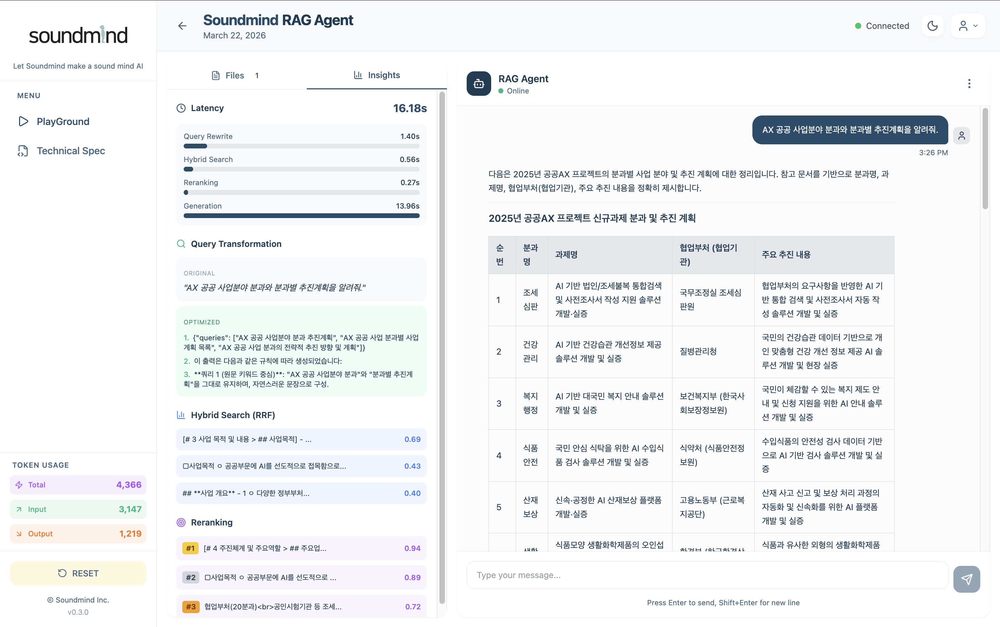
4. Retrieval Insight — Query Transformation + Hybrid Score + Reranking Impact② Chat Agent — Autonomous AI agent (MVP shipped)
An autonomous agent that, beyond documents, lets the LLM decide and call the tools it needs. Built on LangGraph ReAct, it handles compound tasks step by step.
- LangGraph StateGraph — 2-node graph (agent / tools), conditional routing based on tool_calls, MemorySaver for session state, 10-iteration cap to prevent infinite loops
- 3 built-in tools — Tavily Search (web search, max 5 results), File Read (TXT/PDF, security check: blocks .env / .ssh / .aws), Report Agent (sub-agent generating 4 doc types: summary / analysis / minutes / custom)
- MCP extension — Model Context Protocol client adds external tools dynamically
- Multi-provider — same interface for OpenAI / vLLM / Gemini, Guest BYOK lets guests use their own API keys
Chat Agent
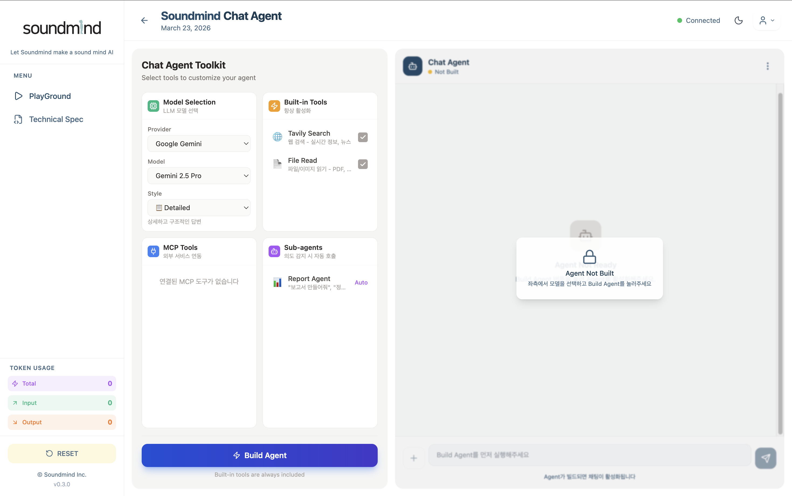
1. Toolkit — pick model · tools · MCP · sub-agent, then Build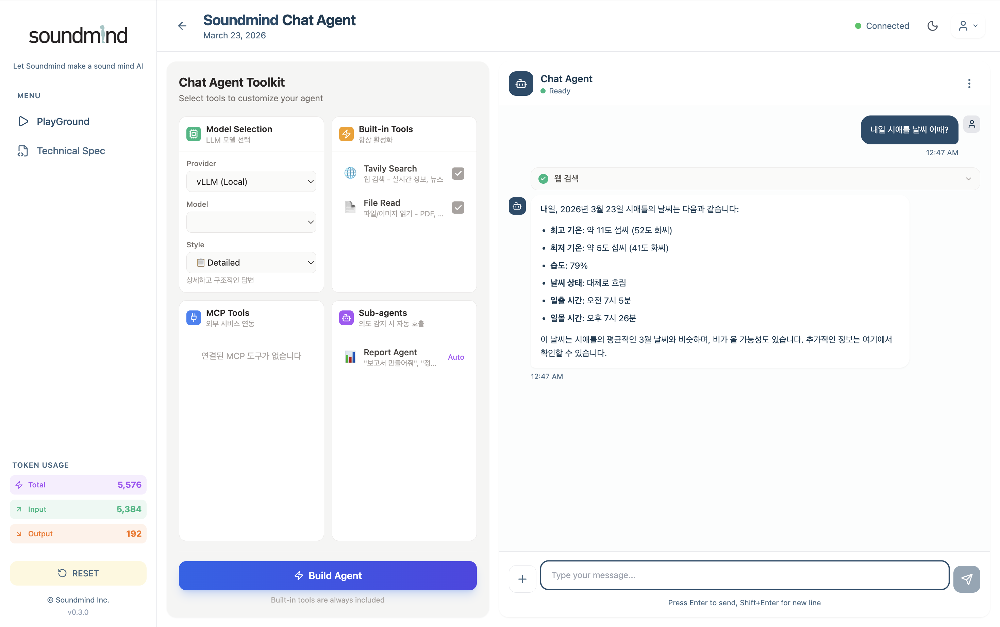
2. Chat session — Tavily Search call and response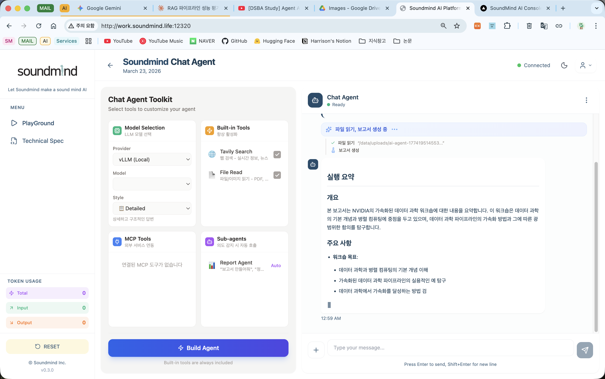
3. File Read — file read + auto-call to Report Agent generates a report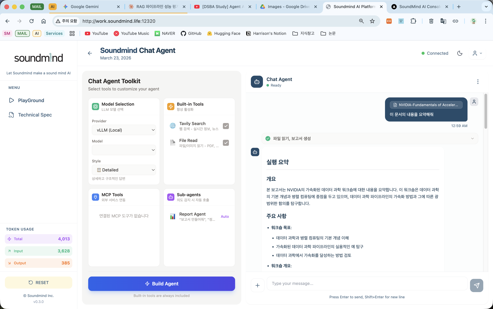
4. Report — generated document-summary report③ AICC Agent — AI Contact Center (not started at exit)
Planned to combine RAG Agent's document-grounded answering with Chat Agent's autonomous tool use, specialized for customer-support scenarios. Not actively developed before my exit (March 2026).
Next Step (roadmap at exit)
Plans as of my exit (March 2026). Subsequent progress was handled internally at SoundMind.
WigtnOCR integration — VLM-based parsing upgrade
Extend text-extraction-centric parsing to VLM-based parsing that preserves visual structure — tables, charts, layouts. Apply the results from the separate WigtnOCR research project (Qwen3-VL-2B LoRA fine-tuning → #1 Table TEDS among the four compared models, surpassing the 15× larger 30B model) directly to the Ecosystem to extend the A/B-confirmed VLM parsing quality lead (0.888 → 1.000) across the entire pipeline.
Production release (planned)
- UX improvements and stability based on Beta feedback
- Auto-optimization cycle: evaluate → analyze → redeploy feedback loop
- Develop AICC Agent — complete the three-Agent service set